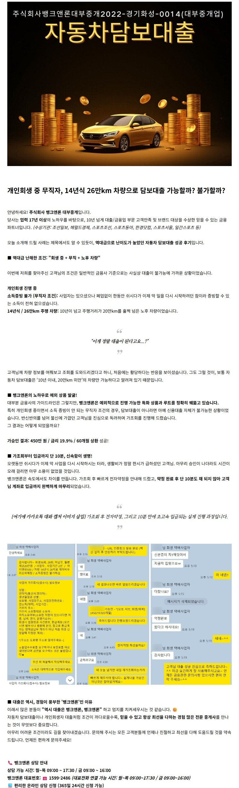
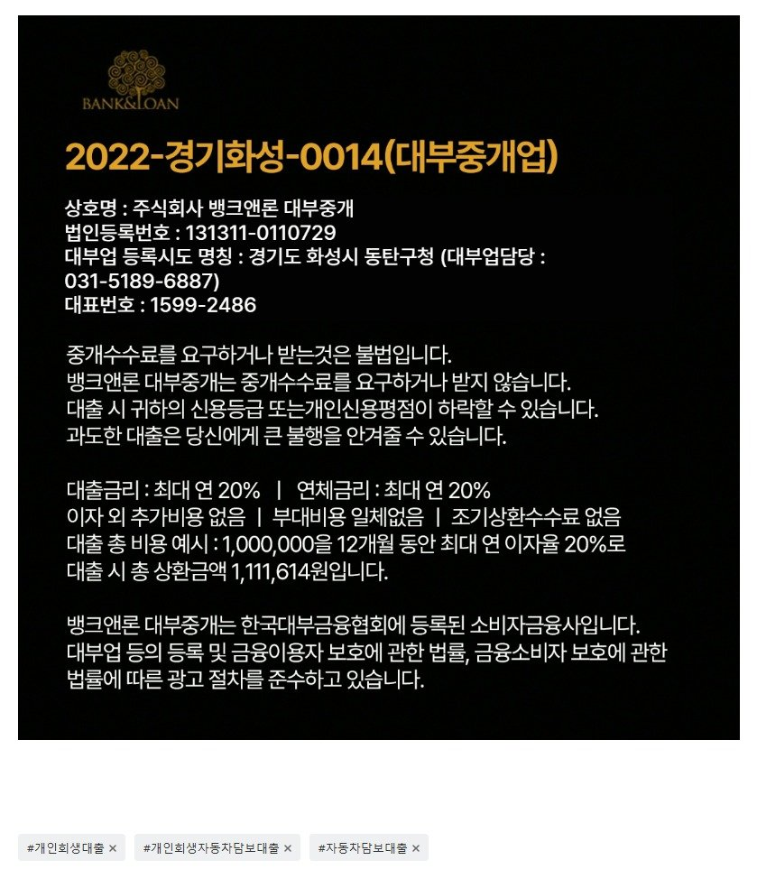

[필독사례] 개인회생 중 무직자, 14년식 26만km 차량으로 담보대출 가능할까? 불가할까?

? 공식 홈페이지에서 신청하기 https://www.banknloan.kr/대출상품/자동차담보대출
? 카톡 채널 실시간 상담 https://pf.kakao.com/_pxeDsM
https://www.youtube.com/watch?v=PDxvfq_jwhw

https://cafe.naver.com/cityman88/311461